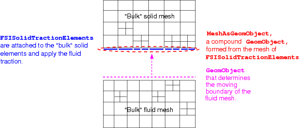

This document provides an overview of
- how to change the serial driver code for Turek & Hron's FSI benchmark problem so that both the fluid and solid meshes can be adapted,
- how to distribute the problem across multiple processors,
and
- how to enable load balancing of the problem once it is distributed.
The document is part of a series of tutorials that discuss how to modify existing serial driver codes so that the Problem object can be distributed across multiple processors.
Enabling spatial adaptivity for the fluid and solid meshes
In the original (serial) driver code for Turek & Hron's FSI benchmark problem we only adapted the fluid mesh. Before discussing how to modify the code to refine the fluid and solid meshes simultaneously, we provide a brief reminder of the procedure used to discretise fluid-structure interaction problems that involve fluid and solid domains of equal spatial dimension (e.g. a 2D fluid domain interacting with a 2D solid domain) when using algebraic node update methods to adjust the position of the nodes in the fluid mesh.
We refer to another tutorial for a discussion of FSI problems involving the interaction of fluids with (lower-dimensional) shell and beam structures.
General methodology
The figure below shows a sketch of a simple(r) fluid-structure interaction problem involving fluid and solid domains that meet along a single mesh boundary. We assume that the fluid mesh uses an algebraic node update function to adjust the position of its nodes in response to changes in the domain boundary, represented by the GeomObject shown in magenta. (You may wish to consult another tutorial for a reminder of how oomph-lib's algebraic node update methods work).

In an FSI problem, the fluid mesh's free boundary is a boundary of the solid mesh, i.e. the boundary along which the fluid exerts a traction onto the solid. Within oomph-lib, the fluid traction is applied to the solid domain by attaching FSISolidTractionElements to the faces of the "bulk" solid elements adjacent to the FSI boundary. (In the above sketch the FSISolidTractionElements are shown in blue.) The deformation of the fluid and solid meshes is coupled by using the MeshAsGeomObject formed from the FSISolidTractionElements as the GeomObject that defines the moving boundary of the fluid mesh. (In sketch above, this is indicated by the magenta arrow.)
Modifications to allow adaptivity of the fluid and solid meshes
If the solid mesh is not adapted, the adaptation for the fluid mesh is straightforward and proceeds fully automatically as described elsewhere. In particular, the node update data for newly-created fluid nodes is created automatically by a call to the AlgebraicMesh::update_node_update(...) function during the adaptation. This function obtains the required information about the boundary by using the MeshAsGeomObject built from the FSISolidTractionElements.
If the solid mesh is also adapted, then the existing FSISolidTractionElements must (at some point) be deleted and new ones must be attached to the adapted "bulk" solid mesh. In all other problems, this is done by deleting the FSISolidTractionElements in Problem::actions_before_adapt() and attaching new ones in Problem::actions_after_adapt(); see, e.g. the tutorial on the solution of a Poisson problem with flux boundary conditions. However, in the present problem this is not possible because, once the FSISolidTractionElements have been deleted, the MeshAsGeomObject can no longer be used to represent the shape and position of the FSI boundary, which would cause the adaptation of the fluid mesh to fail.
To avoid this problem, we adopt the following strategy:
- When adding the various meshes to the
Problem'scollection of sub-meshes, we add the fluid mesh before the solid mesh. (This happens to be what was done already in the original driver code.) Usually, the order in which sub-meshes are added to theProblemis irrelevant. Here the order does matter because we will exploit the fact that the sub-meshes are adapted individually, in the order in which they were added to theProblem.
- The
FSISolidTractionElementsare not deleted inProblem::actions_before_adapt()and remain attached to the "bulk" solid elements throughout the "bulk" mesh adaptation procedure. When the fluid mesh is adapted, the appropriateMeshAsGeomObjectis, therefore, still fully-functional (and refers to the boundary as represented by the solid domain before the "bulk" solid mesh is adapted).
Here is a sketch of problem after adaptation of the fluid mesh:
 Sketch of the problem following the adaptation of the fluid mesh. The solid mesh has not yet been refined.
Sketch of the problem following the adaptation of the fluid mesh. The solid mesh has not yet been refined.
- The subsequent adaptation of the "bulk" solid mesh is likely to turn some of the
FSISolidTractionElementsinto "dangling" elements. (This occurs whenever aFSISolidTractionElementsis attached to a "bulk" solid elements that disappears during the adaptation, e.g. by being refined.)
Here is a plot of the problem following the adaptation of the solid mesh :
 Sketch of the problem following the adaptation of the solid mesh -- the `dangling' FSISolidTractionElements are represented by dotted lines.
Sketch of the problem following the adaptation of the solid mesh -- the `dangling' FSISolidTractionElements are represented by dotted lines.
- Hence, in
Problem::actions_after_adapt()we delete the existingFSISolidTractionElementsand immediately (re-)attach new ones. Now, theMeshAsGeomObjectthat represents the FSI boundary is broken because it still refers to the just deletedFSISolidTractionElements.
Sketch of the problem following the creation of new FSISolidTractionElements. The fact that the MeshAsGeomObject is broken is indicated by the dashed lines.
- Thus, we rebuild the
MeshAsGeomObjectfrom the newly-createdFSISolidTractionElements, and update the fluid mesh's pointer to this newGeomObjectthat describes the boundary shape.
 Sketch of the problem with re-built MeshAsGeomObject.
Sketch of the problem with re-built MeshAsGeomObject.
- Finally, we execute the
AlgebraicMesh::update_node_update(...)function for all nodes in the fluid mesh to ensure that their node update data refers to the newFSISolidTractionElements.
- The remaining tasks (such as the renewed setup of the fluid load on the
FSISolidTractionElementsvia a call toFSI_functions::setup_fluid_load_info_for_solid_elements(...), etc.) remain the same as in the previous version of the code.
Distributing the Problem
In the present example, there are two "bulk" meshes corresponding to the fluid and solid domains and three "surface" meshes of traction elements. The traction elements are FaceElements created from the "bulk" fluid elements and should be deleted before the problem is distributed, see the tutorial on applying flux boundary conditions in a Poisson problem for more details. In the previous example involving the interaction of a 2D fluid domain with a 1D beam structure there were only two meshes: a "bulk" fluid mesh and a "surface" solid mesh. In that problem all elements in the 1D mesh of FSIHermiteBeamElements were retained on all processors as halo elements by using the function Mesh::keep_all_elements_as_halos(). The same methodology could be used here, but it would be extremely wasteful to retain all the solid elements in the "bulk" solid mesh because only the elements next to the FSI boundary are required. Instead, we use a more fine-grained method of retaining elements via the function GeneralisedElement::must_be_kept_as_halo().
Implementation
Most of the driver code is identical to the original serial version discussed in another tutorial. We therefore only discuss those parts of the code that have to be changed to allow (i) the simultaneous adaptation of the fluid and solid meshes, and (ii) the problem distribution.
The main function
As usual in a parallel driver code, the only addition to the main() function is the inclusion of calls to MPI_Helpers::init(), MPI_Helpers::finalize(), and the Problem::distribute() functions.
The problem class
The only additions to the serial version of the problem class are the functions actions_before_distribute() and actions_after_distribute(), and the helper function delete_fsi_traction_elements(), discussed below.
Deleting the FSISolidTractionElements
To facilitate the deletion and re-creation of the FSISolidTractionElements before and after the adaptation (and distribution) we provide a new helper function delete_fsi_traction_elements() which complements the already-existing create_fsi_traction_elements() function:
Actions before distribute
As discussed above, we must ensure that the "bulk" solid elements adjacent to the FSI boundary are retained on all processors. Hence, the actions_before_distribute() function starts with a loop over the FSISolidTractionElements within which we use the function GeneralisedElement::must_be_kept_as_halo() to indicate that the associated bulk elements must be retained.
Next, we flush all the meshes from the problem's collection of sub-meshes and add only the "bulk" fluid and solid meshes (in that order!). The FaceElements do not need to be distributed, because they will be re-created in actions_after_distribute().
Actions after distribute
Following the problem distribution, we delete the old FSISolidTractionElements and then (re-)attach new ones, which will be created as halo elements where necessary.
We complete the build of the FSISolidTractionElements by passing the FSI parameter and the boundary number in the bulk mesh. The relevant code is identical to the serial version and we omit its listing here.
Next, we create new MeshAsGeomObjects from the newly-created FSISolidTractionElements and pass them to the (algebraic) fluid mesh:
The MeshAsGeomObjects have changed, so we must call the update_node_update() function again for each node in the fluid mesh:
Now we add the FSI traction meshes back to the problem and rebuild the global mesh.
Finally, we re-set the fluid load on the solid elements by calling FSI_functions::setup_fluid_load_info_for_solid_elements(...) before re-assigning the auxiliary node update function that imposes the no-slip condition for all fluid nodes on the FSI boundaries. [Recall that the (re-)assignment of the auxiliary node-update function must be performed after the call to FSI_functions::setup_fluid_load_info_for_solid_elements(...).]
The remainder of the function identifies which processors contain the fluid control node whose velocities we document in the trace file.
Actions after adapt
The actions_after_adapt() function is very similar to actions_after_distribute() function, so we omit is listing here. The only significant differences are that (i) the redundant fluid and solid pressures are (re)-pinned; (ii) the identification of the fluid control node does not need to be setup; and (iii) the traction meshes were never removed from the problem, so do not need to be added back in.
The doc_solution() function
As with the other parallel driver codes, the main modification to the post-processing function is the addition of the processor number to all output files. Furthermore, we only write the trace file on the processors that contain the fluid control node. In the interest of brevity we omit the listing of the modified function.
Results
The figure below illustrates the distribution of the problem across four processors, represented by the four colours, with the fluid elements outlined in black and the solid elements outlined in white.
Zooming in near the "flag" shows how both fluid and solid meshes are refined and distributed independently:

Load balancing
When employing load balancing in this problem, we modify the time-stepping loop to perform the procedure after each timestep:
The build_mesh() function
The function Problem::build_mesh() must be supplied by the user if they wish to use the load balancing capability. Thus, in this driver code, we move all the required code to build the entire global mesh into this function, and call it from within the problem constructor:
The build_mesh() function itself contains all the relevant code from within the previous parallel driver code's problem constructor.
Actions before and after load balancing
In this example, all that is required for the actions_after_load_balance() function is the addition of the unpin-repin procedure from the actions_after_adapt() function to the appropriate part of the actions_after_distribute() function, since all the other functionality is already identical. The actions_before_load_balance() function is identical to the actions_before_distribute() function.
Source files for this tutorial
- The source files for this tutorial are located in the directory:
demo_drivers/mpi/multi_domain/turek_flag/
- The main driver code is:
demo_drivers/mpi/multi_domain/turek_flag/turek_flag.cc - The driver code for the load balancing example is:
demo_drivers/mpi/multi_domain/turek_flag/turek_flag_load_balance.cc
PDF file
A pdf version of this document is available.